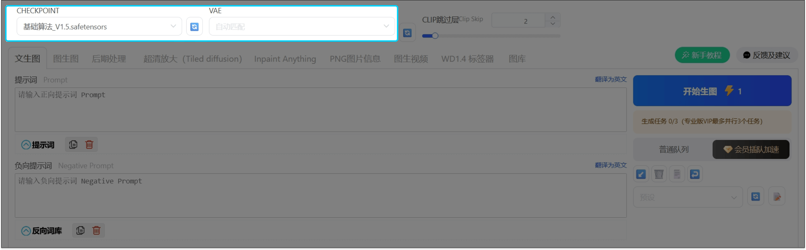
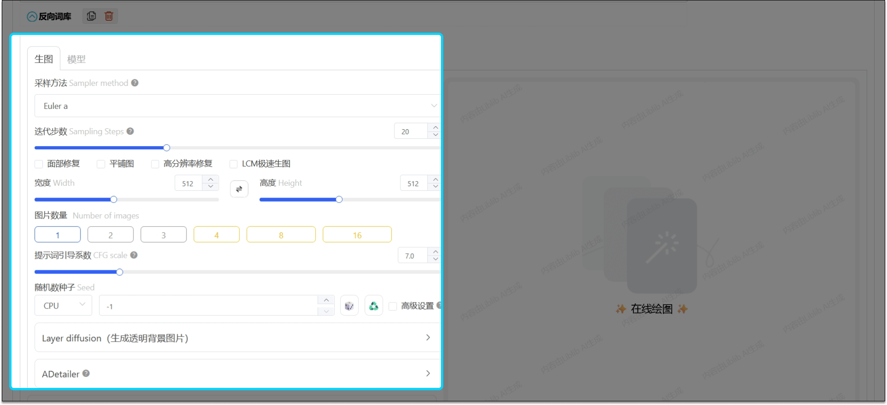
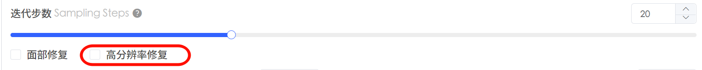

LibLibAI 完全新手入门：从零到跑出第一张 AI 图，五分钟够了
第一次接触 LibLibAI 怕看不懂？这篇从零带你走完生图全流程，从挑模型到出片，每一步都讲清楚你会看到什么、应该做什么。
这篇能带你从完全不懂到用 LibLibAI 跑出第一张自己的 AI 图——不需要任何基础，跟着点就行。
它到底是干嘛的？一个生活化类比
把 LibLibAI 想成一个「AI 绘画工作室」。你不用自己动手画，只要跟工作室里的画师说清楚你想要什么样的画面，它就能给你画出来。工作室里还有好几位专长不同的画师：有的擅长写实人像，有的擅长二次元，有的擅长风景插画——挑一位适合你需求的画师，比你从零开始学画画省事一万倍。
它的官网就是这个工作室的前台，进去之后你会发现这里不只一个画师在等你。
五分钟上手：从安装到第一次跑通的最短路径
先去下载安装包，装好进官网。别被满屏的输入框和滑块吓到。第一次用，我们只做五件事，其他参数全用默认值——默认值本身就是社区里最稳的配置，新手阶段改它反而是乱打乱撞。
第一步：挑一个好上手的画师（模型）
回首页，在搜索框里找一个高下载量的 Checkpoint 模型——Checkpoint 就是刚才说的「画师」，每个画师风格不同，写实人像、二次元、风景插画各有擅长。挑下载量高的不会出错，热门模型通常调得比较好，出图稳定。
找到喜欢的模型，点进模型页，先加模型库——这相当于把这位画师拉进你的固定阵容里。然后点「立即生图」，直接跳转到生图界面。

第二步：确认模型加载成功
进生图界面先扫一眼左上角的下拉框，应该显示你刚选的那个模型名字。如果显示的还是默认模型，点一下下拉框换过来就行。旁边那个 VAE 选项保持「自动」，它自己会匹配，不用你操心。
第三步：粘贴一段现成提示词
第一张图不建议自己从零写提示词——就像第一次找画师，你脑子里有画面但不知道怎么描述，不如拿一段别人验证过好用的模板改改。
画面风格：(masterpiece,best quality),(realistic, photo-realistic:1.1)
人物细节：1girl,solo,extremely detailed eyes and face,white hair,long hair
画面背景：(black background:1.1),gorgeous
修饰元素：light on face,science fiction上面这段是教程里的人像示例，正向提示词框贴进去就行。负向提示词框（告诉 AI 你不想要什么）点右上角的「反向词库」按钮直接套模板，核心挡住低画质、多手多脚这些常见问题：lowres、bad anatomy、bad hands、extra fingers 这几个先放进去。
第四步：参数全默认，图片数量选 4
采样方法、迭代步数、CFG 引导系数——这一堆滑块全部不动。图片数量改成 4，一次出四张，好挑一张顺眼的。宽高保持默认就行，之后想放大再说。

第五步：点「开始生图」
右侧那个蓝色大按钮就是「开始生图」。点下去之后画面会进入生成队列等待——普通用户单任务排队，会员档位有并行数。等个几分钟，四张图就出来了，挑一张你觉得最顺眼的。
第一张图的意义是熟悉流程，不是出大片——哪怕四张都一般也没关系，你已经完整走完了一次生图闭环，知道整个流程是什么样了。
上手后先玩这三个功能
跑通第一张图之后，别急于调各种参数。先玩这三个新手期最值的功能，每个都能让你的出图质量立刻上一个台阶。
第一招：换模型 = 换画风
这是最快看到变化的方式。刚才你用的那位画师画人像好，但你想画风景？回首页换一个风景向的 Checkpoint 模型，加进模型库，同样的提示词跑一遍，画风立刻变。你会发现，模型决定了 70% 的出图效果，提示词是在模型风格基础上微调。
第二招：图片数量 + 1 → 选到好图的概率翻倍
刚才让你选 4 张，这不是玄学。同样的提示词和参数，AI 每次生成的结果都不完全一样——它内部有一个「随机种子」在控制每次生成的差异。多生成几张，总有一张构图或光影你喜欢的。
找到喜欢的那张之后，你会注意到参数区里的「随机种子」会自动显示一串数字，把它记下来，下次用同样的模型 + 提示词 + 种子，就能复现这张图。种子是你和 AI 沟通的「配方号」。
第三招：想放大先别硬拉分辨率，试试高分辨率修复
直接把宽高从 512 拉到 1024 想画大图？不推荐——出图慢两倍，还容易脸崩。正确做法是勾选参数区里的高分辨率修复（Hires.fix）。它的逻辑是：先用 512 快速出一张小图定好构图，然后在小图基础上二次重绘放大到你要的尺寸，细节全在第二次补进去，又快又稳。
重绘幅度默认 0.75 就行——这个值让 AI 有发挥空间补充细节，想要和原图一模一样就降到 0.3 左右，更多参数组合可以去LibLibAI文档慢慢翻。

小白的三个常见疑问
第一次用总会碰到这些困惑，提前了解省得你踩坑。
Q1：为什么我的图看起来和教程示例差很多？
大概率是模型不一样。教程用的模型是经过挑选的示例模型，你手里的模型画风可能不同。不用纠结「我是不是哪里操作错了」——换一个模型再试才是正解，同一套提示词在不同模型上的出图差异大到出乎你意料。
Q2：迭代步数改高一点会不会更好？
不一定。迭代步数（Steps）控制 AI「画多少遍」，默认值通常在 20~30 之间。步数太少画面模糊，步数太多会过拟合（相当于 AI 在同一个区域反复打磨反而出问题）。默认值就是社区公认的甜区，新手阶段别碰它——等你能熟练看出「这张是步数太少还是太多」了再调。
Q3：提示词写得越多越好吗？
不是。提示词要精准，不是长。把画面风格、主体、背景、修饰元素分成几个区块写，比堆一大串形容词有效。而且提示词权重（括号或数字）也会影响效果，(masterpiece:1.3) 比 ((masterpiece)) 更直观，但也是进阶玩法，先用简单写法就好。
恭喜你，已经完成了 LibLibAI 的第一次生图，也摸到了三个实用的小技巧。下一步想深入玩，可以试试视频生成的 @图片/@视频/@音频 组合语法——上传一张角色立绘，加一段音频，就能生成带说话口型的配音视频，比你想象的简单得多。
顺手说一声，这套资料的开源代码和文档我同步维护在三个仓库里，GitHub 上有完整的提交历史，Gitee 和 GitCode 是国内镜像，GitHub、Gitee、GitCode 挑一个网络通的就行。